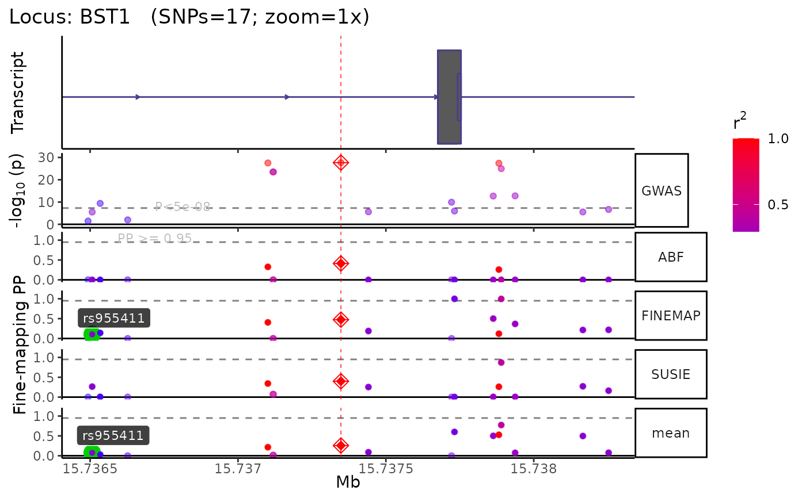
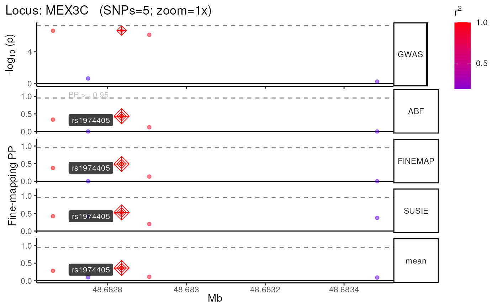

echolocatoR will automatically fine-map each locus.
Uses the topSNPs data.frame to define locus coordinates.
finemap_loci(
loci = NULL,
fullSS_path,
fullSS_genome_build = NULL,
results_dir = file.path(tempdir(), "results"),
dataset_name = "dataset_name",
dataset_type = "GWAS",
topSNPs = "auto",
force_new_subset = FALSE,
force_new_LD = FALSE,
force_new_finemap = FALSE,
finemap_methods = c("ABF", "FINEMAP", "SUSIE"),
finemap_args = NULL,
n_causal = 5,
credset_thresh = 0.95,
consensus_thresh = 2,
fillNA = 0,
conditioned_snps = "auto",
priors_col = NULL,
munged = FALSE,
colmap = echodata::construct_colmap(munged = munged),
compute_n = "ldsc",
LD_reference = "1KGphase3",
LD_genome_build = "hg19",
leadSNP_LD_block = FALSE,
superpopulation = "EUR",
download_method = "axel",
bp_distance = 5e+05,
min_POS = NA,
max_POS = NA,
min_MAF = NA,
trim_gene_limits = FALSE,
max_snps = NULL,
min_r2 = 0,
remove_variants = FALSE,
remove_correlates = FALSE,
query_by = "tabix",
case_control = TRUE,
qtl_suffixes = NULL,
plot_types = c("simple"),
show_plot = TRUE,
zoom = "1x",
tx_biotypes = NULL,
nott_epigenome = FALSE,
nott_show_placseq = FALSE,
nott_binwidth = 200,
nott_bigwig_dir = NULL,
xgr_libnames = NULL,
roadmap = FALSE,
roadmap_query = NULL,
remove_tmps = TRUE,
conda_env = "echoR_mini",
return_all = TRUE,
use_tryCatch = TRUE,
seed = 2022,
nThread = 1,
verbose = TRUE,
top_SNPs = deprecated(),
PP_threshold = deprecated(),
consensus_threshold = deprecated(),
plot.Nott_epigenome = deprecated(),
plot.Nott_show_placseq = deprecated(),
plot.Nott_binwidth = deprecated(),
plot.Nott_bigwig_dir = deprecated(),
plot.Roadmap = deprecated(),
plot.Roadmap_query = deprecated(),
plot.XGR_libnames = deprecated(),
server = deprecated(),
plot.types = deprecated(),
plot.zoom = deprecated(),
QTL_prefixes = deprecated(),
vcf_folder = deprecated(),
probe_path = deprecated(),
file_sep = deprecated(),
chrom_col = deprecated(),
chrom_type = deprecated(),
position_col = deprecated(),
snp_col = deprecated(),
pval_col = deprecated(),
effect_col = deprecated(),
stderr_col = deprecated(),
tstat_col = deprecated(),
locus_col = deprecated(),
freq_col = deprecated(),
MAF_col = deprecated(),
A1_col = deprecated(),
A2_col = deprecated(),
gene_col = deprecated(),
N_cases_col = deprecated(),
N_controls_col = deprecated(),
N_cases = deprecated(),
N_controls = deprecated(),
proportion_cases = deprecated(),
sample_size = deprecated(),
PAINTOR_QTL_datasets = deprecated()
)Character list of loci in Locus col of topSNPs.
Path to the full summary statistics file (GWAS or QTL) that you want to fine-map. It is usually best to provide the absolute path rather than the relative path.
Genome build of the full summary statistics
(fullSS_path). Can be "GRCH37" or "GRCH38" or one of their synonyms..
If fullSS_genome_build==NULL and munged=TRUE,
infers genome build (hg19 vs. hg38)
from summary statistics using get_genome_builds.
Where to store all results. IMPORTANT!: It is usually best to provide the absolute path rather than the relative path. This is especially important for FINEMAP.
The name you want to assign to the dataset being fine-mapped, This will be used to name the subdirectory where your results will be stored (e.g. Data/GWAS/<dataset_name>). Don't use special characters (e.g.".", "/").
The kind dataset you're fine-mapping (e.g. GWAS, eQTL, tQTL). This will also be used when creating the subdirectory where your results will be stored (e.g. Data/<dataset_type>/Kunkle_2019).
A data.frame with the genomic coordinates of the lead SNP
for each locus.
The lead SNP will be used as the center of the window when extracting
subset from the full GWAS/QTL summary statistics file.
Only one SNP per Locus should be included.
At minimum, topSNPs should include the following columns:
A unique name for each locus. Often, loci are named after a relevant gene (e.g. LRRK2) or based on the name/coordinates of the lead SNP (e.g. locus_chr12_40734202)
The chromosome that the SNP is on. Can be "chr12" or "12" format.
The genomic position of the SNP (in basepairs)
By default, if a subset of the full
summary stats file for a given locus is already present,
then echolocatoR will just use the pre-existing file.
Set force_new_subset=T to override this and extract a new subset.
Subsets are saved in the following path structure:
Data/\<dataset_type\>/\<dataset_name\>/\<locus\>/Multi-finemap/
\<locus\>_\<dataset_name\>_Multi-finemap.tsv.gz
Force new LD subset.
By default, if an fine-mapping results file for
a given locus is already present,
then echolocatoR will just use the preexisting file.
Set force_new_finemap=T to override this and re-run fine-mapping.
Which fine-mapping methods you want to use.
A named nested list containing additional arguments
for each fine-mapping method. e.g.
finemap_args = list(FINEMAP=list(), PAINTOR=list(method=""))
The maximum number of potential causal SNPs per locus. This parameter is used somewhat differently by different fine-mapping tools. See tool-specific functions for details.
The minimum fine-mapped posterior probability
for a SNP to be considered part of a Credible Set.
For example, credset_thresh=.95 means that all Credible Set SNPs
will be 95% Credible Set SNPs.
The minimum number of fine-mapping tools in which a SNP is in the Credible Set in order to be included in the "Consensus_SNP" column.
Value to fill LD matrix NAs with.
Which SNPs to conditions on when fine-mapping with (e.g. COJO).
[Optional] Name of the a column in
dat to extract SNP-wise prior probabilities from.
Whether fullSS_path have already been
standardised/filtered full summary stats
with format_sumstats.
If munged=FALSE you'll need to provide the necessary
column names to the colmap argument.
Column name mappings in in fullSS_path. Must be a named
list. Can use construct_colmap to assist with this. This
function can be used in two different ways:
munged=FALSE : When munged=FALSE,
you will need to provide the necessary column names to the
colmap argument (default).
munged=TRUE : Alternatively, instead of filling out
each argument in
construct_colmap, you can simply set munged=TRUE
if fullSS_path has already been munged with
format_sumstats.
How to compute per-SNP sample size (new column "N").
If the column "N" is already present in dat, this column
will be used to extract per-SNP sample sizes
and the argument compute_n will be ignored.
If the column "N" is not present in dat, one of the following
options can be supplied to compute_n:
0: N will not be computed.
>0: If any number >0 is provided,
that value will be set as N for every row.
**Note**: Computing N this way is incorrect and should be avoided
if at all possible.
"sum": N will be computed as:
cases (N_CAS) + controls (N_CON), so long as both columns are present.
"ldsc": N will be computed as effective sample size:
Neff =(N_CAS+N_CON)*(N_CAS/(N_CAS+N_CON)) / mean((N_CAS/(N_CAS+N_CON))(N_CAS+N_CON)==max(N_CAS+N_CON)).
"giant": N will be computed as effective sample size:
Neff = 2 / (1/N_CAS + 1/N_CON).
"metal": N will be computed as effective sample size:
Neff = 4 / (1/N_CAS + 1/N_CON).
LD reference to use:
"1KGphase1" : 1000 Genomes Project Phase 1 (genome build: hg19).
"1KGphase3" : 1000 Genomes Project Phase 3 (genome build: hg19).
"UKB" : Pre-computed LD from a British European-decent subset of UK Biobank. Genome build : hg19
"<vcf_path>" : User-supplied path to a custom VCF file
to compute LD matrix from.
Accepted formats: .vcf / .vcf.gz / .vcf.bgz
Genome build : defined by user with target_genome.
"<matrix_path>" : User-supplied path to a pre-computed LD matrix
Accepted formats: .rds / .rda / .csv /
.tsv / .txt
Genome build : defined by user with target_genome.
Genome build of the LD panel. This is automatically assigned to the correct genome build for each LD panel except when the user supplies custom vcf/LD files.
Only return SNPs within the same LD block as the lead SNP (the SNP with the smallest p-value).
Superpopulation to subset LD panel by
(used only if LD_reference is "1KGphase1" or "1KGphase3").
See popDat_1KGphase1 and popDat_1KGphase3
for full tables of their respective samples.
"axel" : Multi-threaded
"wget" : Single-threaded
"download.file" : Single-threaded
"internal" : Single-threaded
(passed to download.file)
"wininet" : Single-threaded
(passed to download.file)
"libcurl" : Single-threaded
(passed to download.file)
"curl" : Single-threaded
(passed to download.file)
Distance around the lead SNP to include.
Minimum genomic position to include.
Maximum genomic position to include.
Minimum Minor Allele Frequency (MAF) of SNPs to include.
If a gene name is supplied to this argument
(e.g. trim_gene_limits="BST"), only SNPs within the gene body
will be included.
Maximum number of SNPs to include.
Correlation threshold for remove_correlates.
A list of SNP RSIDs to remove.
A list of SNPs.
If provided, all SNPs that correlates with these SNPs (at r2>=min_r2)
will be removed from both dat and LD list items..
Choose which method you want to use to extract locus subsets from the full summary stats file. Methods include:
Convert the full summary stats file in an indexed tabix file. Makes querying lightning fast after the initial conversion is done. (default)
Extract locus subsets using min/max genomic coordinates with awk.
Whether the summary statistics come from a case-control
study (e.g. a GWAS of having Alzheimer's Disease or not) (TRUE)
or a quantitative study (e.g. a GWAS of height, or an eQTL) (FALSE).
If columns with QTL data is included in dat,
you can indicate which columns those are with one or more string suffixes
(e.g. qtl_suffixes=c(".eQTL1",".eQTL2") to use the columns
"P.QTL1", "Effect.QTL1", "P.QTL2", "Effect.QTL2").
Which kinds of plots to include. Options:
"simple"Just plot the following tracks: GWAS, fine-mapping, gene models
"fancy"Additionally plot XGR annotation tracks (XGR, Roadmap, Nott2019). '
"LD"LD heatmap showing the 10 SNPs surrounding the lead SNP.
Print plot to screen.
Zoom into the center of the locus when plotting (without editing the fine-mapping results file). You can provide either:
The size of your plot window in terms of basepairs
(e.g. zoom=50000 for a 50kb window).
How much you want to zoom in (e.g. zoom="1x"
for the full locus, zoom="2x"
for 2x zoom into the center of the locus, etc.).
You can pass a list of window sizes (e.g. c(50000,100000,500000))
to automatically generate
multiple views of each locus.
This can even be a mix of different style inputs: e.g.
c("1x","4.5x",25000).
Transcript biotypes to include in the gene model track.
By default (NULL), all transcript biotypes will be included.
See get_tx_biotypes for a full list of
all available biotypes
Include tracks showing brain cell-type-specific epigenomic data from Nott et al. (2019).
Include track generated by NOTT2019_plac_seq_plot.
When including Nott et al. (2019) epigenomic data in the track plots, adjust the bin width of the histograms.
Instead of pulling Nott et al. (2019) epigenomic data from the UCSC Genome Browser, use a set of local bigwig files.
Passed to XGR_plot.
Which XGR annotations to check overlap with.
For full list of libraries see
here.
Passed to the RData.customised argument in xRDataLoader.
Find and plot annotations from Roadmap.
Only plot annotations from Roadmap whose
metadata contains a string or any items from a list of strings
(e.g. "brain" or c("brain","liver","monocytes")).
Whether to remove any temporary files (e.g. FINEMAP output files) after the pipeline is done running.
Conda environment to use.
Return a nested list of various the pipeline's outputs
including plots, tables, and file paths (default: TRUE).
If FALSE, instead only returns a single merged
data.table containing the results from all loci.
If an error is encountered in one locus,
the pipeline will continue to try running the rest of the loci
(default: use_tryCatch=TRUE). This avoid stopping all analyses due
to errors that only affect some loci,
but currently prevents debugging via traceback.
Set the seed for all functions where this is possible.
Number of threads to parallelise saving across.
Print messages.
[deprecated]
[deprecated]
[deprecated]
[deprecated]
[deprecated]
[deprecated]
[deprecated]
[deprecated]
[deprecated]
[deprecated]
[deprecated]
[deprecated]
[deprecated]
[deprecated]
[deprecated]
[deprecated]
[deprecated]
[deprecated]
[deprecated]
[deprecated]
[deprecated]
[deprecated]
[deprecated]
[deprecated]
[deprecated]
[deprecated]
[deprecated]
[deprecated]
[deprecated]
[deprecated]
[deprecated]
[deprecated]
[deprecated]
[deprecated]
[deprecated]
[deprecated]
[deprecated]
[deprecated]
By default, returns a nested list containing grouped by locus names
(e.g. BST1, MEX3C). The results of each locus contain
the following elements:
finemap_dat : Fine-mapping results from all selected methods
merged with the original summary statistics
(i.e. Multi-finemap results).
locus_plot : A nested list containing one or more
zoomed views of locus plots.
LD_matrix : The post-processed LD matrix used
for fine-mapping.
LD_plot : An LD plot (if used).
locus_dir : Locus directory results are saved in.
arguments : A record of the arguments supplied to
finemap_loci.
In addition, the following object summarizes the results from all the locus-specific results:
merged_dat : A merged data.table
with all fine-mapping results from all loci.
Other MAIN:
finemap_locus()
topSNPs <- echodata::topSNPs_Nalls2019
fullSS_path <- echodata::example_fullSS(dataset = "Nalls2019")
#> Writing file to ==> /tmp/RtmpZmsFJq/nalls2019.fullSS_subset.tsv
res <- echolocatoR::finemap_loci(
fullSS_path = fullSS_path,
topSNPs = topSNPs,
loci = c("BST1","MEX3C"),
finemap_methods = c("ABF","FINEMAP","SUSIE"),
dataset_name = "Nalls23andMe_2019",
fullSS_genome_build = "hg19",
bp_distance = 1000,
munged = TRUE)
#> [1] "+ Assigning Gene and Locus independently."
#> Standardising column headers.
#> First line of summary statistics file:
#> Locus Gene CHR POS SNP P Effect
#> Returning unmapped column names without making them uppercase.
#> + Mapping colnames from MungeSumstats ==> echolocatoR
#> ┌────────────────────────────────────────┐
#> │ │
#> │ )))> 🦇 BST1 [locus 1 / 2] 🦇 <((( │
#> │ │
#> └────────────────────────────────────────┘
#>
#> ────────────────────────────────────────────────────────────────────────────────
#>
#> ── Step 1 ▶▶▶ Query 🔎 ─────────────────────────────────────────────────────────
#>
#> ────────────────────────────────────────────────────────────────────────────────
#> + Query Method: tabix
#> Constructing GRanges query using min/max ranges within a single chromosome.
#> query_dat is already a GRanges object. Returning directly.
#> ========= echotabix::convert =========
#> Converting full summary stats file to tabix format for fast querying.
#> Inferred format: 'table'
#> Explicit format: 'table'
#> Inferring comment_char from tabular header: 'SNP'
#> Determining chrom type from file header.
#> Assuming fullSS_path summary stats have already been processed with MungeSumstats.
#> Chromosome format: 1
#> Detecting column delimiter.
#> Identified column separator: \t
#> Sorting rows by coordinates via bash.
#> Searching for header row with grep.
#> ( grep ^'SNP' .../nalls2019.fullSS_subset.tsv; grep
#> -v ^'SNP' .../nalls2019.fullSS_subset.tsv | sort
#> -k2,2n
#> -k3,3n ) > .../file1eda3c341338_sorted.tsv
#> Constructing outputs
#> bgzipping file with Rsamtools.
#> Reading bgzipped file using: data.table
#> Header preview:
#> SNP CHR BP A1 A2 FREQ BETA SE P N_CAS N_CON
#> 1: rs741214 4 13737637 C A 0.2341 0.0091 0.0119 0.4460 49053 1411006
#> 2: rs79385021 4 13737659 T C 0.9109 0.0009 0.0198 0.9642 30435 974587
#> 3: rs741215 4 13737767 C T 0.0733 0.0190 0.0194 0.3284 49053 1411006
#> 4: rs759261 4 13737915 G A 0.4511 0.0075 0.0100 0.4543 49053 1411006
#> 5: rs35006360 4 13738014 G A 0.1148 -0.0195 0.0160 0.2208 49053 1411006
#> Tabix-indexing file using: Rsamtools
#> Data successfully converted to bgzip-compressed, tabix-indexed format.
#> ========= echotabix::query =========
#> query_dat is already a GRanges object. Returning directly.
#> Inferred format: 'table'
#> Querying tabular tabix file using: Rsamtools.
#> Checking query chromosome style is correct.
#> Chromosome format: 1
#> Retrieving data.
#> Converting query results to data.table.
#> Processing query: 4:15736348-15738348
#> Adding 'query' column to results.
#> Retrieved data with 17 rows
#> Saving query ==> /tmp/RtmpZmsFJq/results/GWAS/Nalls23andMe_2019/BST1/BST1_Nalls23andMe_2019_subset.tsv.gz
#> + Query: 17 SNPs x 11 columns.
#> Standardizing summary statistics subset.
#> Standardizing main column names.
#> ++ Preparing A1,A1 cols
#> ++ Preparing MAF,Freq cols.
#> ++ Could not infer MAF from Freq.
#> ++ Preparing N_cases,N_controls cols.
#> ++ Preparing proportion_cases col.
#> ++ Calculating proportion_cases from N_cases and N_controls.
#> Preparing sample size column (N).
#> Computing effective sample size using the LDSC method:
#> Neff = (N_CAS+N_CON) * (N_CAS/(N_CAS+N_CON)) / mean((N_CAS/(N_CAS+N_CON))[(N_CAS+N_CON)==max(N_CAS+N_CON)]))
#> + Mapping colnames from MungeSumstats ==> echolocatoR
#> + Imputing t-statistic from Effect and StdErr.
#> + leadSNP missing. Assigning new one by min p-value.
#> ++ Ensuring Effect,StdErr,P are numeric.
#> ++ Ensuring 1 SNP per row and per genomic coordinate.
#> ++ Removing extra whitespace
#> + Standardized query: 17 SNPs x 15 columns.
#> ++ Saving standardized query ==> /tmp/RtmpZmsFJq/results/GWAS/Nalls23andMe_2019/BST1/BST1_Nalls23andMe_2019_subset.tsv.gz
#>
#> ────────────────────────────────────────────────────────────────────────────────
#>
#> ── Step 2 ▶▶▶ Extract Linkage Disequilibrium 🔗 ────────────────────────────────
#>
#> ────────────────────────────────────────────────────────────────────────────────
#> LD_reference identified as: 1kg.
#> Using 1000Genomes as LD reference panel.
#> Constructing GRanges query using min/max ranges across one or more chromosomes.
#> + as_blocks=TRUE: Will query a single range per chromosome that covers all regions requested (plus anything in between).
#> LD Reference Panel = 1KGphase3
#> Querying 1KG remote server.
#> Selecting 503 EUR individuals from 1kgphase3.
#> ========= echotabix::query =========
#> query_dat is already a GRanges object. Returning directly.
#> Explicit format: 'vcf'
#> Querying VCF tabix file.
#> Querying VCF file using: VariantAnnotation
#> Checking query chromosome style is correct.
#> Chromosome format: 1
#> Filtering query to 503 samples and returning ScanVcfParam object.
#> Retrieving data.
#> Time difference of 1.7 secs
#> Removing 17 / 66 non-overlapping SNPs.
#> Saving VCF subset ==> /tmp/RtmpZmsFJq/VCF/RtmpZmsFJq.chr4-15736493-15738253.ALL.chr4.phase3_shapeit2_mvncall_integrated_v5a.20130502.genotypes.vcf.bgz
#> Warning: converting NULL pointer to R NULL
#> Time difference of 0.3 secs
#> Retrieved data with 17 rows across 503 samples.
#> echoLD::snpStats:: Filling `MAF` column with MAF from LD panel.
#> echoLD:snpStats:: Computing pairwise LD between 17 SNPs across 503 individuals (stats = R).
#> Time difference of 0 secs
#> 17 x 17 LD_matrix (sparse)
#> Converting obj to sparseMatrix.
#> Saving sparse LD matrix ==> /tmp/RtmpZmsFJq/results/GWAS/Nalls23andMe_2019/BST1/LD/BST1.1KGphase3_LD.RDS
#> Removing 1 temp files.
#> + FILTER:: Filtering by LD features.
#>
#> ────────────────────────────────────────────────────────────────────────────────
#>
#> ── Step 3 ▶▶▶ Filter SNPs 🚰 ───────────────────────────────────────────────────
#>
#> ────────────────────────────────────────────────────────────────────────────────
#> FILTER:: Filtering by SNP features.
#> + FILTER:: Post-filtered data: 17 x 16
#> + Subsetting LD matrix and dat to common SNPs...
#> Removing unnamed rows/cols
#> Replacing NAs with 0
#> + LD_matrix = 17 SNPs.
#> + dat = 17 SNPs.
#> + 17 SNPs in common.
#> Converting obj to sparseMatrix.
#>
#> ────────────────────────────────────────────────────────────────────────────────
#>
#> ── Step 4 ▶▶▶ Fine-map 🔊 ──────────────────────────────────────────────────────
#>
#> ────────────────────────────────────────────────────────────────────────────────
#> Gathering method sources.
#> Gathering method citations.
#> Preparing sample size column (N).
#> Using existing 'N' column.
#> Gathering method sources.
#> Gathering method citations.
#> Gathering method sources.
#> Gathering method citations.
#> ABF
#> ✅ All required columns present.
#> FINEMAP
#> ✅ All required columns present.
#> ✅ All optional columns present.
#> SUSIE
#> ✅ All required columns present.
#> ✅ All optional columns present.
#> ++ Fine-mapping using 3 tool(s): ABF, FINEMAP, SUSIE
#>
#> +++ Multi-finemap:: ABF +++
#> Using all default values for finemap_args$ABF
#> Preparing sample size column (N).
#> Using existing 'N' column.
#> Running ABF.
#> ++ Credible Set SNPs identified = 0
#> ++ Merging ABF results with multi-finemap data.
#>
#> +++ Multi-finemap:: FINEMAP +++
#> Using all default values for finemap_args$FINEMAP
#> Preparing sample size column (N).
#> Using existing 'N' column.
#> + Subsetting LD matrix and dat to common SNPs...
#> Removing unnamed rows/cols
#> Replacing NAs with 0
#> + LD_matrix = 17 SNPs.
#> + dat = 17 SNPs.
#> + 17 SNPs in common.
#> Converting obj to sparseMatrix.
#> Constructing master file.
#> Constructing data.z file.
#> Constructing data.ld file.
#> FINEMAP path: /github/home/.cache/R/echofinemap/FINEMAP/finemap_v1.4.1_x86_64/finemap_v1.4.1_x86_64
#> Inferred FINEMAP version: 1.4.1
#> Running FINEMAP.
#> cd .../BST1 &&
#> .../finemap_v1.4.1_x86_64
#>
#> --sss
#>
#> --in-files .../master
#>
#> --log
#>
#> --n-causal-snps 5
#>
#> |--------------------------------------|
#> | Welcome to FINEMAP v1.4.1 |
#> | |
#> | (c) 2015-2022 University of Helsinki |
#> | |
#> | Help : |
#> | - ./finemap --help |
#> | - www.finemap.me |
#> | - www.christianbenner.com |
#> | |
#> | Contact : |
#> | - finemap@christianbenner.com |
#> | - matti.pirinen@helsinki.fi |
#> |--------------------------------------|
#>
#> --------
#> SETTINGS
#> --------
#> - dataset : all
#> - corr-config : 0.95
#> - n-causal-snps : 5
#> - n-configs-top : 50000
#> - n-conv-sss : 100
#> - n-iter : 100000
#> - n-threads : 1
#> - prior-k0 : 0
#> - prior-std : 0.05
#> - prob-conv-sss-tol : 0.001
#> - prob-cred-set : 0.95
#>
#> ------------
#> FINE-MAPPING (1/1)
#> ------------
#> - GWAS summary stats : FINEMAP/data.z
#> - SNP correlations : FINEMAP/data.ld
#> - Causal SNP stats : FINEMAP/data.snp
#> - Causal configurations : FINEMAP/data.config
#> - Credible sets : FINEMAP/data.cred
#> - Log file : FINEMAP/data.log_sss
#>
- Reading summary statistics : +
- Reading summary statistics : -
- Reading summary statistics : +
- Reading summary stats : done!
- Reading SNP correlations : 0.000%
- Reading SNP correlations : done!
- Reading input : done!
#>
#> - Number of GWAS samples : 1474097
#> - Number of SNPs : 17
#> - Prior-Pr(# of causal SNPs is k) :
#> (0 -> 0)
#> 1 -> 0.59
#> 2 -> 0.295
#> 3 -> 0.0921
#> 4 -> 0.0202
#> 5 -> 0.00327
#> 0 configurations evaluated (0.000/100%)
- 17 configurations evaluated (0.000/100%)
- 31 configurations evaluated (0.000/100%)
- 262 configurations evaluated (0.050/100%)
- 322 configurations evaluated (0.100/100%)
- 520 configurations evaluated (0.150/100%)
- 604 configurations evaluated (0.200/100%)
- 622 configurations evaluated (0.250/100%)
- 653 configurations evaluated (0.299/100%) : converged after 299 iterations
#>
- Computing causal SNP statistics : 0.153%
- Computing causal SNP statistics : 7.810%
- Computing causal SNP statistics : 15.467%
- Computing causal SNP statistics : 23.124%
- Computing causal SNP statistics : 30.781%
- Computing causal SNP statistics : 38.438%
- Computing causal SNP statistics : 46.095%
- Computing causal SNP statistics : 53.752%
- Computing causal SNP statistics : 61.409%
- Computing causal SNP statistics : 69.066%
- Computing causal SNP statistics : 76.723%
- Computing causal SNP statistics : 84.380%
- Computing causal SNP statistics : 92.037%
- Computing causal SNP statistics : 99.694%
- Computing causal SNP statistics : done!
#> - Regional SNP heritability : 9.81e-05 (SD: 1.61e-05 ; 95% CI: [6.96e-05,0.000131])
#> - Log10-BF of >= one causal SNP : 62.4
#> - Post-expected # of causal SNPs : 5
#> - Post-Pr(# of causal SNPs is k) :
#> (0 -> 0)
#> 1 -> 1.08e-39
#> 2 -> 3.5e-38
#> 3 -> 1.87e-38
#> 4 -> 3.1e-38
#> 5 -> 1
#> - Computing credible sets :
- Writing causal configurations : 0.153%
- Writing causal configurations : 7.810%
- Writing causal configurations : 15.467%
- Writing causal configurations : 23.124%
- Writing causal configurations : 30.781%
- Writing causal configurations : 38.438%
- Writing causal configurations : 46.095%
- Writing causal configurations : 53.752%
- Writing causal configurations : 61.409%
- Writing causal configurations : 69.066%
- Writing causal configurations : 76.723%
- Writing causal configurations : 84.380%
- Writing causal configurations : 92.037%
- Writing causal configurations : 99.694%
- Writing causal SNP statistics : 5.882%
- Writing causal SNP statistics : 64.706%
- Writing output : done!
#> - Run time : 0 hours, 0 minutes, 0 seconds
#> 1 data.cred* file(s) found in the same subfolder.
#> Selected file based on postPr_k: data.cred5
#> Importing conditional probabilities (.cred file).
#> Importing marginal probabilities (.snp file).
#> Importing configuration probabilities (.config file).
#> ++ Credible Set SNPs identified = 12
#> ++ Merging FINEMAP results with multi-finemap data.
#>
#> +++ Multi-finemap:: SUSIE +++
#> Using all default values for finemap_args$SUSIE
#> Loading required namespace: Rfast
#> Preparing sample size column (N).
#> Using existing 'N' column.
#> + SUSIE:: sample_size=1,474,097
#> + Subsetting LD matrix and dat to common SNPs...
#> Removing unnamed rows/cols
#> Replacing NAs with 0
#> + LD_matrix = 17 SNPs.
#> + dat = 17 SNPs.
#> + 17 SNPs in common.
#> Converting obj to sparseMatrix.
#> + SUSIE:: Using `susie_rss()` from susieR v0.12.27
#> + SUSIE:: Extracting Credible Sets.
#> ++ Credible Set SNPs identified = 0
#> ++ Merging SUSIE results with multi-finemap data.
#> Identifying Consensus SNPs...
#> + support_thresh = 2
#> + Calculating mean Posterior Probability (mean.PP)...
#> + 3 fine-mapping methods used.
#> + 12 Credible Set SNPs identified.
#> + 0 Consensus SNPs identified.
#> Saving merged finemapping results ==> /tmp/RtmpZmsFJq/results/GWAS/Nalls23andMe_2019/BST1/Multi-finemap/1KGphase3_LD.Multi-finemap.tsv.gz
#> + Fine-mapping with 'ABF, FINEMAP, SUSIE' completed:
#>
#> ────────────────────────────────────────────────────────────────────────────────
#>
#> ── Step 5 ▶▶▶ Plot 📈 ──────────────────────────────────────────────────────────
#>
#> ────────────────────────────────────────────────────────────────────────────────
#> +-------- Locus Plot: BST1 --------+
#> + support_thresh = 2
#> + Calculating mean Posterior Probability (mean.PP)...
#> + 3 fine-mapping methods used.
#> + 12 Credible Set SNPs identified.
#> + 0 Consensus SNPs identified.
#> + Filling NAs in CS cols with 0.
#> + Filling NAs in PP cols with 0.
#> LD_matrix detected. Coloring SNPs by LD with lead SNP.
#> ++ echoplot:: GWAS full window track
#> ++ echoplot:: GWAS track
#> ++ echoplot:: Merged fine-mapping track
#> Melting PP and CS from 4 fine-mapping methods.
#> ++ echoplot:: Adding Gene model track.
#> Converting dat to GRanges object.
#> Loading required namespace: EnsDb.Hsapiens.v75
#> max_transcripts= 1 .
#> 1 transcripts from 1 genes returned.
#> Fetching data...
#> OK
#> Parsing exons...
#> OK
#> Defining introns...
#> OK
#> Defining UTRs...
#> OK
#> Defining CDS...
#> OK
#> aggregating...
#> Done
#> Constructing graphics...
#> + Adding vertical lines to highlight SNP groups...
#> +>+>+>+>+ zoom = 1x +<+<+<+<+
#> + echoplot:: Get window suffix...
#> + echoplot:: Removing GWAS full window track @ zoom=1x
#> + Removing subplot margins...
#> + Reordering tracks...
#> [1] "+ Ensuring last track shows genomic units..."
#> + Aligning xlimits for each subplot...
#> + Checking track heights...
#> + echoplot:: Saving plot ==> /tmp/RtmpZmsFJq/results/GWAS/Nalls23andMe_2019/BST1/multiview.BST1.1KGphase3.1x.png
#> Found more than one class "simpleUnit" in cache; using the first, from namespace 'hexbin'
#> Also defined by 'ggbio'
#> Recording all `finemap_locus` arguments.
#> Formatting locus results.
#> ┌─────────────────────────────────────────┐
#> │ │
#> │ )))> 🦇 MEX3C [locus 2 / 2] 🦇 <((( │
#> │ │
#> └─────────────────────────────────────────┘
#>
#> ────────────────────────────────────────────────────────────────────────────────
#>
#> ── Step 1 ▶▶▶ Query 🔎 ─────────────────────────────────────────────────────────
#>
#> ────────────────────────────────────────────────────────────────────────────────
#> + Query Method: tabix
#> Constructing GRanges query using min/max ranges within a single chromosome.
#> query_dat is already a GRanges object. Returning directly.
#> ========= echotabix::convert =========
#> Converting full summary stats file to tabix format for fast querying.
#> Inferred format: 'table'
#> Explicit format: 'table'
#> Inferring comment_char from tabular header: 'SNP'
#> Determining chrom type from file header.
#> Chromosome format: 1
#> Detecting column delimiter.
#> Identified column separator: \t
#> Sorting rows by coordinates via bash.
#> Searching for header row with grep.
#> ( grep ^'SNP' .../nalls2019.fullSS_subset.tsv; grep
#> -v ^'SNP' .../nalls2019.fullSS_subset.tsv | sort
#> -k2,2n
#> -k3,3n ) > .../file1eda6a1e6c55_sorted.tsv
#> Constructing outputs
#> Using existing bgzipped file: /tmp/RtmpZmsFJq/nalls2019.fullSS_subset.tsv.bgz
#> Set force_new=TRUE to override this.
#> Tabix-indexing file using: Rsamtools
#> Data successfully converted to bgzip-compressed, tabix-indexed format.
#> ========= echotabix::query =========
#> query_dat is already a GRanges object. Returning directly.
#> Inferred format: 'table'
#> Querying tabular tabix file using: Rsamtools.
#> Checking query chromosome style is correct.
#> Chromosome format: 1
#> Retrieving data.
#> Converting query results to data.table.
#> Processing query: 18:48682589-48684589
#> Adding 'query' column to results.
#> Retrieved data with 7 rows
#> Saving query ==> /tmp/RtmpZmsFJq/results/GWAS/Nalls23andMe_2019/MEX3C/MEX3C_Nalls23andMe_2019_subset.tsv.gz
#> + Query: 7 SNPs x 11 columns.
#> Standardizing summary statistics subset.
#> Standardizing main column names.
#> ++ Preparing A1,A1 cols
#> ++ Preparing MAF,Freq cols.
#> ++ Could not infer MAF from Freq.
#> ++ Preparing N_cases,N_controls cols.
#> ++ Preparing proportion_cases col.
#> ++ Calculating proportion_cases from N_cases and N_controls.
#> Preparing sample size column (N).
#> Computing effective sample size using the LDSC method:
#> Neff = (N_CAS+N_CON) * (N_CAS/(N_CAS+N_CON)) / mean((N_CAS/(N_CAS+N_CON))[(N_CAS+N_CON)==max(N_CAS+N_CON)]))
#> + Mapping colnames from MungeSumstats ==> echolocatoR
#> + Imputing t-statistic from Effect and StdErr.
#> + leadSNP missing. Assigning new one by min p-value.
#> ++ Ensuring Effect,StdErr,P are numeric.
#> ++ Ensuring 1 SNP per row and per genomic coordinate.
#> ++ Removing extra whitespace
#> + Standardized query: 7 SNPs x 15 columns.
#> ++ Saving standardized query ==> /tmp/RtmpZmsFJq/results/GWAS/Nalls23andMe_2019/MEX3C/MEX3C_Nalls23andMe_2019_subset.tsv.gz
#>
#> ────────────────────────────────────────────────────────────────────────────────
#>
#> ── Step 2 ▶▶▶ Extract Linkage Disequilibrium 🔗 ────────────────────────────────
#>
#> ────────────────────────────────────────────────────────────────────────────────
#> LD_reference identified as: 1kg.
#> Using 1000Genomes as LD reference panel.
#> Constructing GRanges query using min/max ranges across one or more chromosomes.
#> + as_blocks=TRUE: Will query a single range per chromosome that covers all regions requested (plus anything in between).
#> LD Reference Panel = 1KGphase3
#> Querying 1KG remote server.
#> Selecting 503 EUR individuals from 1kgphase3.
#> ========= echotabix::query =========
#> query_dat is already a GRanges object. Returning directly.
#> Explicit format: 'vcf'
#> Querying VCF tabix file.
#> Querying VCF file using: VariantAnnotation
#> Checking query chromosome style is correct.
#> Chromosome format: 1
#> Filtering query to 503 samples and returning ScanVcfParam object.
#> Retrieving data.
#> Time difference of 1.3 secs
#> Removing 7 / 38 non-overlapping SNPs.
#> Saving VCF subset ==> /tmp/RtmpZmsFJq/VCF/RtmpZmsFJq.chr18-48682662-48684103.ALL.chr18.phase3_shapeit2_mvncall_integrated_v5a.20130502.genotypes.vcf.bgz
#> Warning: converting NULL pointer to R NULL
#> Time difference of 0.2 secs
#> Retrieved data with 7 rows across 503 samples.
#> echoLD::snpStats:: Filling `MAF` column with MAF from LD panel.
#> echoLD:snpStats:: Computing pairwise LD between 7 SNPs across 503 individuals (stats = R).
#> Time difference of 0 secs
#> 7 x 7 LD_matrix (sparse)
#> Converting obj to sparseMatrix.
#> Saving sparse LD matrix ==> /tmp/RtmpZmsFJq/results/GWAS/Nalls23andMe_2019/MEX3C/LD/MEX3C.1KGphase3_LD.RDS
#> Removing 1 temp files.
#> + FILTER:: Filtering by LD features.
#>
#> ────────────────────────────────────────────────────────────────────────────────
#>
#> ── Step 3 ▶▶▶ Filter SNPs 🚰 ───────────────────────────────────────────────────
#>
#> ────────────────────────────────────────────────────────────────────────────────
#> FILTER:: Filtering by SNP features.
#> + FILTER:: Post-filtered data: 5 x 16
#> + Subsetting LD matrix and dat to common SNPs...
#> Removing unnamed rows/cols
#> Replacing NAs with 0
#> + LD_matrix = 7 SNPs.
#> + dat = 5 SNPs.
#> + 5 SNPs in common.
#> Converting obj to sparseMatrix.
#>
#> ────────────────────────────────────────────────────────────────────────────────
#>
#> ── Step 4 ▶▶▶ Fine-map 🔊 ──────────────────────────────────────────────────────
#>
#> ────────────────────────────────────────────────────────────────────────────────
#> Gathering method sources.
#> Gathering method citations.
#> Preparing sample size column (N).
#> Using existing 'N' column.
#> Gathering method sources.
#> Gathering method citations.
#> Gathering method sources.
#> Gathering method citations.
#> ABF
#> ✅ All required columns present.
#> FINEMAP
#> ✅ All required columns present.
#> ✅ All optional columns present.
#> SUSIE
#> ✅ All required columns present.
#> ✅ All optional columns present.
#> ++ Fine-mapping using 3 tool(s): ABF, FINEMAP, SUSIE
#>
#> +++ Multi-finemap:: ABF +++
#> Using all default values for finemap_args$ABF
#> Preparing sample size column (N).
#> Using existing 'N' column.
#> Running ABF.
#> ++ Credible Set SNPs identified = 0
#> ++ Merging ABF results with multi-finemap data.
#>
#> +++ Multi-finemap:: FINEMAP +++
#> Using all default values for finemap_args$FINEMAP
#> Preparing sample size column (N).
#> Using existing 'N' column.
#> + Subsetting LD matrix and dat to common SNPs...
#> Removing unnamed rows/cols
#> Replacing NAs with 0
#> + LD_matrix = 5 SNPs.
#> + dat = 5 SNPs.
#> + 5 SNPs in common.
#> Converting obj to sparseMatrix.
#> Constructing master file.
#> Constructing data.z file.
#> Constructing data.ld file.
#> FINEMAP path: /github/home/.cache/R/echofinemap/FINEMAP/finemap_v1.4.1_x86_64/finemap_v1.4.1_x86_64
#> Inferred FINEMAP version: 1.4.1
#> Running FINEMAP.
#> cd .../MEX3C &&
#> .../finemap_v1.4.1_x86_64
#>
#> --sss
#>
#> --in-files .../master
#>
#> --log
#>
#> --n-causal-snps 5
#>
#> |--------------------------------------|
#> | Welcome to FINEMAP v1.4.1 |
#> | |
#> | (c) 2015-2022 University of Helsinki |
#> | |
#> | Help : |
#> | - ./finemap --help |
#> | - www.finemap.me |
#> | - www.christianbenner.com |
#> | |
#> | Contact : |
#> | - finemap@christianbenner.com |
#> | - matti.pirinen@helsinki.fi |
#> |--------------------------------------|
#>
#> --------
#> SETTINGS
#> --------
#> - dataset : all
#> - corr-config : 0.95
#> - n-causal-snps : 5
#> - n-configs-top : 50000
#> - n-conv-sss : 100
#> - n-iter : 100000
#> - n-threads : 1
#> - prior-k0 : 0
#> - prior-std : 0.05
#> - prob-conv-sss-tol : 0.001
#> - prob-cred-set : 0.95
#>
#> ------------
#> FINE-MAPPING (1/1)
#> ------------
#> - GWAS summary stats : FINEMAP/data.z
#> - SNP correlations : FINEMAP/data.ld
#> - Causal SNP stats : FINEMAP/data.snp
#> - Causal configurations : FINEMAP/data.config
#> - Credible sets : FINEMAP/data.cred
#> - Log file : FINEMAP/data.log_sss
#>
- Reading summary statistics : +
- Reading summary stats : done!
- Reading SNP correlations : 0.000%
- Reading SNP correlations : done!
- Reading input : done!
#>
#> - Number of GWAS samples : 1460059
#> - Number of SNPs : 5
#> - Prior-Pr(# of causal SNPs is k) :
#> (0 -> 0)
#> 1 -> 0.609
#> 2 -> 0.305
#> 3 -> 0.0762
#> 4 -> 0.00952
#> 5 -> 0.000476
#> 0 configurations evaluated (0.000/100%)
- 5 configurations evaluated (0.000/100%)
- 7 configurations evaluated (0.000/100%)
- 12 configurations evaluated (0.050/100%)
- 12 configurations evaluated (0.100/100%)
- 12 configurations evaluated (0.106/100%) : converged after 106 iterations
#>
- Computing causal SNP statistics : 8.333%
- Computing causal SNP statistics : done!
#> - Regional SNP heritability : 1.93e-05 (SD: 7.4e-06 ; 95% CI: [7.12e-06,3.53e-05])
#> - Log10-BF of >= one causal SNP : 3.56
#> - Post-expected # of causal SNPs : 1.09
#> - Post-Pr(# of causal SNPs is k) :
#> (0 -> 0)
#> 1 -> 0.915
#> 2 -> 0.0853
#> 3 -> 0.000204
#> 4 -> 0
#> 5 -> 0
#> - Computing credible sets :
- Writing causal configurations : 8.333%
- Writing causal SNP statistics : 20.000%
- Writing output : done!
#> - Run time : 0 hours, 0 minutes, 0 seconds
#> 2 data.cred* file(s) found in the same subfolder.
#> Selected file based on postPr_k: data.cred1
#> Importing conditional probabilities (.cred file).
#> No configurations were causal at PP>=0.95.
#> Importing marginal probabilities (.snp file).
#> Importing configuration probabilities (.config file).
#> FINEMAP was unable to identify any credible sets at PP>=0.95.
#> ++ Credible Set SNPs identified = 0
#> ++ Merging FINEMAP results with multi-finemap data.
#>
#> +++ Multi-finemap:: SUSIE +++
#> Using all default values for finemap_args$SUSIE
#> Preparing sample size column (N).
#> Using existing 'N' column.
#> + SUSIE:: sample_size=1,460,059
#> + Subsetting LD matrix and dat to common SNPs...
#> Removing unnamed rows/cols
#> Replacing NAs with 0
#> + LD_matrix = 5 SNPs.
#> + dat = 5 SNPs.
#> + 5 SNPs in common.
#> Converting obj to sparseMatrix.
#> + SUSIE:: Using `susie_rss()` from susieR v0.12.27
#> + SUSIE:: Extracting Credible Sets.
#> ++ Credible Set SNPs identified = 0
#> ++ Merging SUSIE results with multi-finemap data.
#> Identifying Consensus SNPs...
#> + support_thresh = 2
#> + Calculating mean Posterior Probability (mean.PP)...
#> + 3 fine-mapping methods used.
#> + 0 Credible Set SNPs identified.
#> + 0 Consensus SNPs identified.
#> Saving merged finemapping results ==> /tmp/RtmpZmsFJq/results/GWAS/Nalls23andMe_2019/MEX3C/Multi-finemap/1KGphase3_LD.Multi-finemap.tsv.gz
#> + Fine-mapping with 'ABF, FINEMAP, SUSIE' completed:
#>
#> ────────────────────────────────────────────────────────────────────────────────
#>
#> ── Step 5 ▶▶▶ Plot 📈 ──────────────────────────────────────────────────────────
#>
#> ────────────────────────────────────────────────────────────────────────────────
#> +-------- Locus Plot: MEX3C --------+
#> + support_thresh = 2
#> + Calculating mean Posterior Probability (mean.PP)...
#> + 3 fine-mapping methods used.
#> + 0 Credible Set SNPs identified.
#> + 0 Consensus SNPs identified.
#> + Filling NAs in CS cols with 0.
#> + Filling NAs in PP cols with 0.
#> LD_matrix detected. Coloring SNPs by LD with lead SNP.
#> ++ echoplot:: GWAS full window track
#> ++ echoplot:: GWAS track
#> ++ echoplot:: Merged fine-mapping track
#> Melting PP and CS from 4 fine-mapping methods.
#> ++ echoplot:: Adding Gene model track.
#> Converting dat to GRanges object.
#> max_transcripts= 1 .
#> 0 transcripts from 0 genes returned.
#> Returning NULL for gene track.
#> + Adding vertical lines to highlight SNP groups...
#> +>+>+>+>+ zoom = 1x +<+<+<+<+
#> + echoplot:: Get window suffix...
#> + echoplot:: Removing GWAS full window track @ zoom=1x
#> + Removing subplot margins...
#> + Reordering tracks...
#> [1] "+ Ensuring last track shows genomic units..."
#> + Aligning xlimits for each subplot...
#> + Checking track heights...
#> + echoplot:: Saving plot ==> /tmp/RtmpZmsFJq/results/GWAS/Nalls23andMe_2019/MEX3C/multiview.MEX3C.1KGphase3.1x.png
#> Warning: Removed 1 rows containing missing values (geom_text).

#> Warning: Removed 1 rows containing missing values (geom_text).
#> Recording all `finemap_locus` arguments.
#> Formatting locus results.
#>
#> ────────────────────────────────────────────────────────────────────────────────
#>
#> ── Step 6 ▶▶▶ Postprocess data 🎁 ──────────────────────────────────────────────
#>
#> ────────────────────────────────────────────────────────────────────────────────
#> Returning results as nested list.

#> All loci done in: 0.27 min
#>